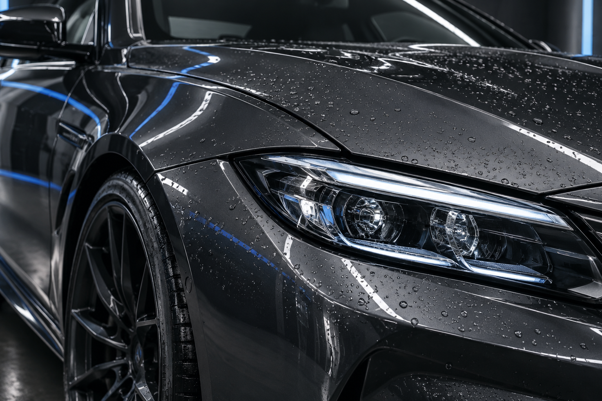
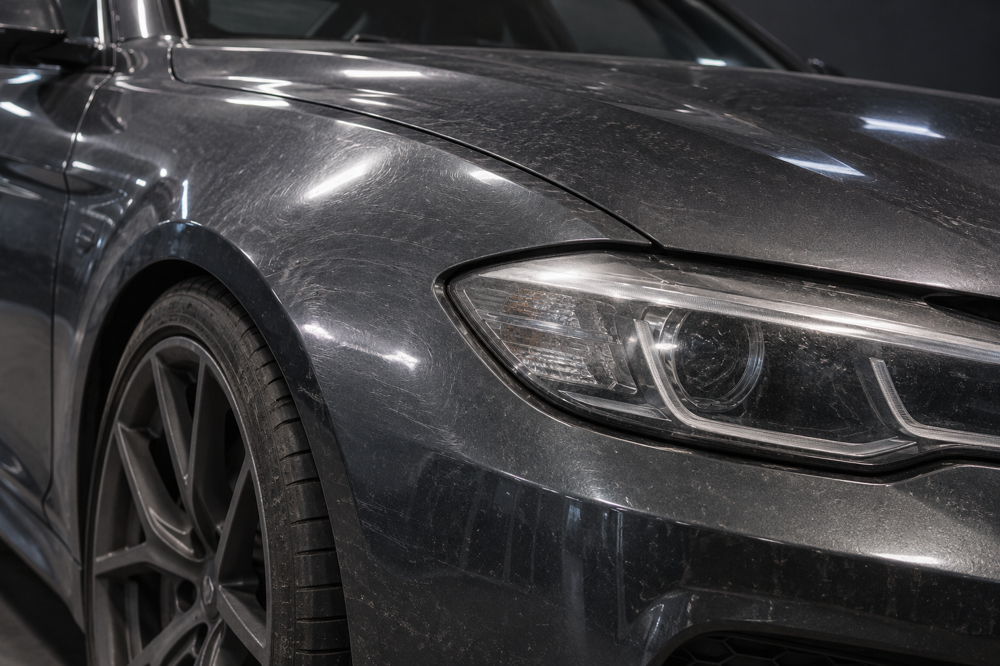

Base técnica
Lavado seguro, descontaminación y acabado para devolver claridad a la pintura.
- Prelavado y lavado por contacto
- Descontaminación férrica
- Protección express
PC / PERFORMANCE DETAILING LAB
Detailing técnico, corrección de pintura y protección para vehículos que merecen una atención precisa.
Tratamientos / 001
Una selección de servicios pensada para recuperar presencia, proteger superficies y dejar claro qué se está haciendo en cada etapa.
Lavado seguro, descontaminación y acabado para devolver claridad a la pintura.
Pulido técnico por etapas para reducir marcas, recuperar brillo y controlar el acabado.
Protección avanzada y repelencia para conservar la superficie limpia por más tiempo.
Inspection / 002
Desliza la lectura para comparar la misma zona del vehículo antes y después del tratamiento. Una muestra visual del nivel de corrección.


Protocol / 003
El detailing premium empieza antes del producto: observamos, decidimos y trabajamos con control.
Revisamos el estado de la pintura, interiores y superficies sensibles.
Definimos el proceso adecuado según el uso y resultado buscado.
Cada etapa se valida con iluminación técnica antes de avanzar.
Recibes el vehículo listo y recomendaciones sencillas de cuidado.
Material / 004
Un tratamiento bien ejecutado no busca exagerar: busca que la superficie se conserve clara, uniforme y fácil de mantener.
Solicitar diagnósticoClient log / 005
Una página real puede mostrar reseñas, disponibilidad y ubicación sin perder la estética técnica.
“La entrega se sintió meticulosa desde la inspección. El brillo y la claridad de la pintura cambiaron por completo el auto.”
— Andrés / cliente Premium Car“La corrección dejó la pintura mucho más uniforme y el acabado se nota desde cualquier ángulo.”
— Mateo / cliente Premium Car“La atención fue precisa, clara y muy cuidadosa con cada parte del vehículo.”
— Fernanda / cliente Premium CarAv. Industria 480, Saltillo, Coahuila.
Lun–Sáb · 8:00 am–6:00 pm
Eventora / Template 03
Podemos adaptar esta dirección técnica a tu negocio, servicios, galería, paquetes y forma de recibir citas.
Esta función está disponible en una página real. En este template está desactivada para demostración.